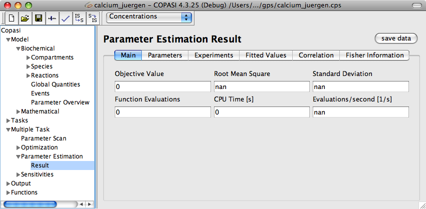

If you want to have output from the parameter estimation task, you have to create an output definition as described in the
output section or you choose the default report named "Parameter Fitting". The default reports prints a description of the settings you provided for this parameter fitting run, intermediate results every time the target function improves, and a detailed result at the end. The easiest way to get a customized output is probably to use the
output assistant which you activate via the Output Assistant button. All that is left to do in order to write the output to a specific file is to connect an output definition with a file. This can be achieved by clicking on the Report button. This opens a dialog that lets you connect the report for a specific task to a file on your hard disk. First we choose a report that is suitable for the parameter estimation task from the drop down list at the top of the dialog. Next, we specify a file that will be used to store the report by clicking on the browse button and selecting the destination in the file dialog that opens. Per default, COPASI creates a new file or overwrites an existing file with the same name. Alternatively, you can tell COPASI to append the report to the end of an existing file by selecting the corresponding check box labeled Append at the bottom of the dialog. Once you are finished, you click on the Confirm button. If you now run the task, COPASI will write the output to the file you specified.
|  |
| Parameter Estimation Results |
After running a Parameter Estimation task the result may be viewed by selecting the Result widget. This result widget contains multiple tabs. The overall fit and performance statistic are displayed in the Main and detailed information about parameters, experiments, and fitted values can be found under the corresponding tabs. In addition, you may look at the correlation matrix of the parameters or the Fisher information matrix.